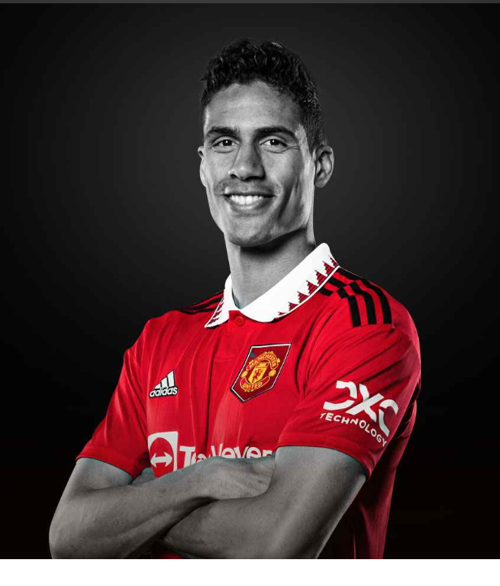

"I came here because I wanted new emotions and it was exactly what I expected and bigger."

AGE
30
APPEARANCES
70
CLEAN SHEETS
2
BIOGRAPHY
One of the world's best defenders over the last decade, Raphael Varane's track record speaks for itself.
With three La Liga titles, four Champions League trophies, a World Cup winners' medal and numerous other honours on his CV, it's easy to forget that the quick and classy ball-playing centre-back is still only 28
But then Varane has always been experienced beyond his years. Born in April 1993, he signed his first professional contract at boyhood club Lens just after turning 17, on the back of an impressive season playing with older team-mates at Under-19 level.
Lens boss Jean-Guy Wallemme was so convinced by his young charge's talent that, when faced with a defensive injury crisis, he threw the tall and composed Varane in as a starter for a November 2010 clash with Montpellier.
A rare clean sheet for the Ligue 1 strugglers followed and, even though that season would end in relegation, Europe's top clubs had been alerted to the potential of the teenager, who made 23 top-flight appearances and even showed his leadership capabilities when captaining the side in their closing game.
Sir Alex Ferguson, looking for a long-term replacement for Rio Ferdinand and Nemanja Vidic, was very interested and, according to his book, our legendary boss personally got involved in the negotiations, only for Real Madrid and new sporting director Zinedine Zidane to step in.
A thoughtful, studious figure - he supposedly asked Zidane to call him back when gauging his interest in the Madrid move, as he was revising for his economics exams - Varane joined the Bernabeu club in late June, starting a 10-year association in which he was, largely, a fulcrum in one of the Spanish club's most storied sides.
After being a bit-part player in the 2011/12 La Liga success, the Frenchman soon established himself as centre-back alongside Sergio Ramos, impressing in Europe to such an extent that, in 2013, he was named in Marca's 'best-ever Real Madrid foreign XI', despite playing fewer than 50 games.
Any accusations of those plaudits being premature were put to bed a year later, when Varane helped Los Blancos to the fabled 'La Decima' - a 10th Champions League triumph - as they dramatically beat city rivals Atletico Madrid in Lisbon.
Aged 21, Varane virtually completed the set of major club trophies with Club World Cup success later that month, but there was more to come, especially after Zidane replaced Rafa Benitez in the Bernabeu hot seat in January 2016.
Raphael was absent for the next Champions League triumph later that year through injury but was again a key member of the side as Real became the first club since Bayern Munich in the 1970s to win three consecutive European Cups, with further successes in 2017 and 2018.
Zidane, who had also won La Liga with his former club side in 2017, announced his departure following that feat, culminating in a poor 2018/19 campaign, but returned to mastermind another title, with Varane the heartbeat of an experienced team alongside the likes of Ramos, Karim Benzema and Toni Kroos.
Just over 10 years after the highly-rated teenager left France, Varane departs Madrid as one of Real's most decorated overseas players, but he will also take his place alongside the likes of Laurent Blanc, Marcel Desailly and Lilian Thuram in the pantheon of top-class French defenders.
A youth international at various levels, he made his full debut for Les Bleus in 2013 and went to the following year's World Cup, where he was one of three shortlisted for the tournament's Best Young Player award.
The youngest player to captain France in 104 years, injury caused him to miss out on the run to the Euro 2016 final on home soil, but he more than made up for that two years later in Russia.
Didier Deschamps's men were crowned world champions, with Varane playing every minute of the tournament and scoring the key opening goal in the quarter-final victory over Uruguay and that ability to come good in the clutch moments - without ever stealing the headlines - has defined Raphael's career.
He caught the eye at Real especially with his performances in the latter stages of the Champions League, with Los Blancos making it to the final four in all but two of his seasons there. But Cristiano Ronaldo and Ramos were usually the main men, with Varane happy to quietly get on with it.
Tall and athletic, there's a presence about Varane, an understated authority,” writes Spanish football expert Sid Lowe. “But not exactly the loudest in the dressing room, nor immediately charismatic or flamboyant, he doesn't demand attention, on or off the pitch. He just plays: regularly for a decade at the most unforgiving place, remember.
Of course, Old Trafford isn't exactly immune to the spotlight either. But few overseas arrivals have come better equipped to succeed than Varane, who really has seen and done it all.
Unveiled on the pitch prior to United's 5-1 win over Leeds in August 2021, Varane made his Reds debut two weeks later at Molineux. Following his first United appearance, the Frenchman went on to star 29 times for the Reds in his debut season.
Varane's first season was disrupted by injuries, forcing the centre-back to miss 16 matches in all competitions. However, when he was fit, the Frenchman oozed class, managing to notch his first goal for United in his debut season, volleying home from a corner in our comfortable 3-0 win over Brentford in May.
The centre-back retired from international football shortly after losing the 2022 World Cup final with France to Argentina, but he added a first piece of United silverware to his significant trophy cabinet in February 2023, when the Reds beat Newcastle United 2-0 in the Carabao Cup final at Wembley.
A reliable performer under Erik ten Hag, Varane struck up an impressive defensive partnership alongside Lisandro Martinez and returned from a late-season injury lay-off to steer United safely into third place and next season's Champions League.